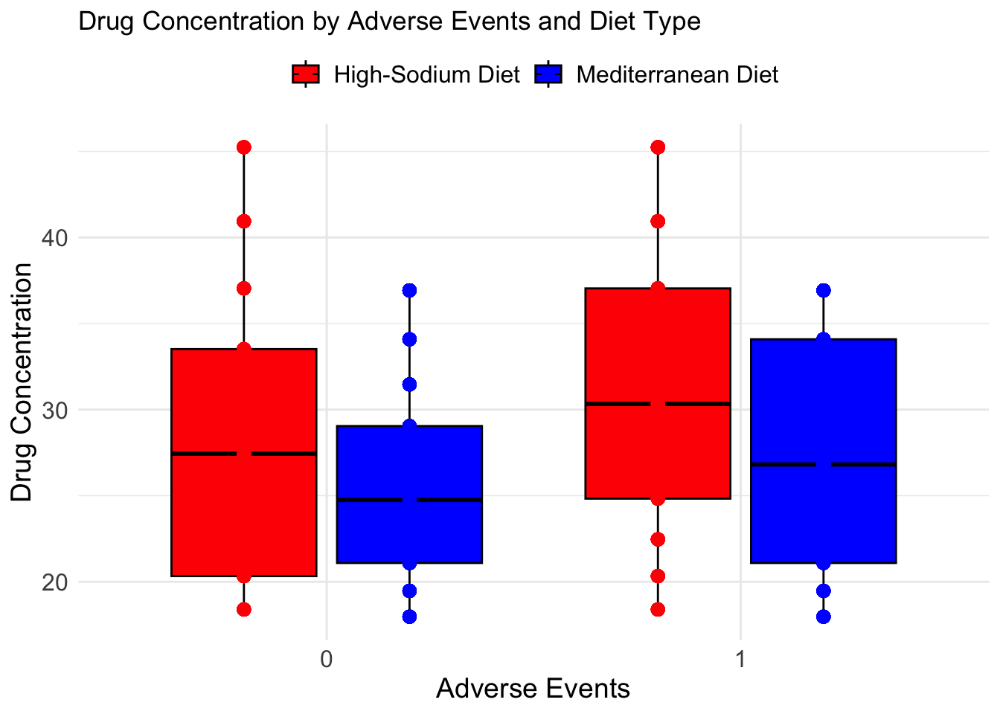
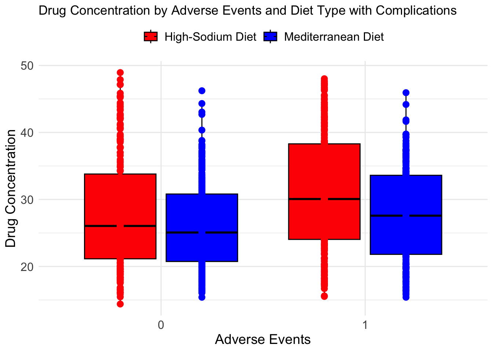

# Set CRAN mirror (before installing any packages)options(repos =c(CRAN ="https://cran.rstudio.com"))# Now install the packageinstall.packages("simstudy")
The downloaded binary packages are in
/var/folders/29/tsfhn2w952x9r8f27_hpzq900000gn/T//RtmphhAmmg/downloaded_packages
# Load the package after installationlibrary(simstudy)
# Load necessary librarieslibrary(tidyverse) # For data manipulation and visualization
── Attaching core tidyverse packages ──────────────────────── tidyverse 2.0.0 ──
✔ dplyr 1.1.4 ✔ readr 2.1.5
✔ forcats 1.0.0 ✔ stringr 1.5.1
✔ ggplot2 3.5.1 ✔ tibble 3.2.1
✔ lubridate 1.9.4 ✔ tidyr 1.3.1
✔ purrr 1.0.2
── Conflicts ────────────────────────────────────────── tidyverse_conflicts() ──
✖ dplyr::filter() masks stats::filter()
✖ dplyr::lag() masks stats::lag()
ℹ Use the conflicted package (<http://conflicted.r-lib.org/>) to force all conflicts to become errors
library(ggplot2)
# Creation of Synthetic Data Set Relating Diet to Adverse Events & --------# Set a random seed for reproducibilityset.seed(42)# Number of patients per diet groupn_patients_per_group <-50# 50 patients in each diet group# Total number of observations (patients x 10 days)n_patients <- n_patients_per_group *2# Two diet groupsn_days <-10# 10 days of sampling per patient# Diet group assignmentsdiet_groups <-rep(c("High-Sodium Diet", "Mediterranean Diet"), each = n_patients_per_group)# Generate the fake patient datapatient_data <-data.frame(patient_id =rep(1:n_patients, each = n_days), # Unique patient IDdiet_group =rep(diet_groups, each = n_days),day =rep(1:n_days, times = n_patients), # Day of sample (1 to 10)cholesterol =NA, # Placeholder for cholesterol levelssystolic_bp =NA, # Placeholder for systolic blood pressurediastolic_bp =NA, # Placeholder for diastolic blood pressuredrug_concentration =NA, # Placeholder for drug concentrationsadverse_event =NA# Placeholder for adverse events)# Simulate baseline cholesterol levels (random, with some variation between patients)patient_data$cholesterol <-rnorm(n_patients, mean =200, sd =25)[patient_data$patient_id]# Blood pressure varies by diet group and is slightly elevated in the High-Sodium Diet grouppatient_data$systolic_bp <-ifelse(patient_data$diet_group =="High-Sodium Diet", rnorm(n_patients, mean =145, sd =10)[patient_data$patient_id],rnorm(n_patients, mean =130, sd =8)[patient_data$patient_id])patient_data$diastolic_bp <-ifelse(patient_data$diet_group =="High-Sodium Diet", rnorm(n_patients, mean =95, sd =8)[patient_data$patient_id],rnorm(n_patients, mean =85, sd =7)[patient_data$patient_id])# Drug concentrations decay over time, with higher concentration for Mediterranean Diet group initiallypatient_data$drug_concentration <-ifelse(patient_data$diet_group =="Mediterranean Diet",40*exp(-0.08* patient_data$day), # Slower decay for Mediterranean diet50*exp(-0.1* patient_data$day)) # Faster decay for High-Sodium Diet# Define a function to simulate adverse events based on drug concentrationsimulate_adverse_event <-function(concentration, diet_group) {# Base probability of an adverse event as a function of drug concentration base_prob <-min(0.1+ (concentration /100), 0.8) # Capped at 80%# Diet type influences the adverse event rate: High-Sodium Diet may have more adverse eventsif (diet_group =="High-Sodium Diet") { base_prob <-min(base_prob +0.15, 0.90) # Increase risk for High-Sodium Diet group }rbinom(1, 1, base_prob) # Simulate a binary outcome (0 = no event, 1 = event)}
# Apply adverse event simulation to each observation (per patient, per day)patient_data$adverse_event <-mapply(simulate_adverse_event, patient_data$drug_concentration, patient_data$diet_group)# Simulate some minor changes in cholesterol and blood pressure based on drug adherence and diet# Let's assume cholesterol improves slightly for Mediterranean diet over time and worsens for High-Sodiumpatient_data$cholesterol <-ifelse(patient_data$diet_group =="Mediterranean Diet", patient_data$cholesterol - (patient_data$day *0.2), # Slow reduction patient_data$cholesterol + (patient_data$day *0.3)) # Slow increase for High-Sodiumpatient_data$systolic_bp <- patient_data$systolic_bp - (patient_data$day *0.5) # Systolic BP drops with timepatient_data$diastolic_bp <- patient_data$diastolic_bp - (patient_data$day *0.3) # Diastolic BP drops with time# Ensure BP stays within reasonable rangespatient_data$systolic_bp <-pmax(patient_data$systolic_bp, 120) # Prevent systolic BP from dropping too lowpatient_data$diastolic_bp <-pmax(patient_data$diastolic_bp, 70) # Prevent diastolic BP from dropping too low# Preview the first few rows of the datasethead(patient_data)
# Optionally: Save the dataset to a CSV filewrite.csv(patient_data, "synthetic_hypertension_lifestyle_data.csv", row.names =FALSE)# Final output summarysummary(patient_data) # Check summary statistics of the dataset
patient_id diet_group day cholesterol
Min. : 1.00 Length:1000 Min. : 1.0 Min. :123.2
1st Qu.: 25.75 Class :character 1st Qu.: 3.0 1st Qu.:185.3
Median : 50.50 Mode :character Median : 5.5 Median :201.9
Mean : 50.50 Mean : 5.5 Mean :201.1
3rd Qu.: 75.25 3rd Qu.: 8.0 3rd Qu.:217.3
Max. :100.00 Max. :10.0 Max. :260.2
systolic_bp diastolic_bp drug_concentration adverse_event
Min. :120.0 Min. : 70.00 Min. :17.97 Min. :0.00
1st Qu.:126.8 1st Qu.: 82.11 1st Qu.:22.12 1st Qu.:0.00
Median :133.7 Median : 87.55 Median :27.13 Median :0.00
Mean :134.4 Mean : 87.76 Mean :28.25 Mean :0.46
3rd Qu.:140.5 3rd Qu.: 93.61 3rd Qu.:33.66 3rd Qu.:1.00
Max. :171.5 Max. :109.18 Max. :45.24 Max. :1.00
# Create a copy of the original dataset - did not konw that you could make a copy to play with within the same scriptpatient_data_copy <- patient_data
# Making Fake Data More Real - 4 ways -------------------------------------# Add random noise to drug concentration (e.g., small fluctuations)patient_data_copy$drug_concentration <- patient_data_copy$drug_concentration +rnorm(nrow(patient_data_copy), mean =0, sd =2)# Increase cholesterol levels by 5% for all patients (simulating a small change)patient_data_copy$cholesterol <- patient_data_copy$cholesterol *1.05# Change blood pressure by adding a constant value to systolic and diastolicpatient_data_copy$systolic_bp <- patient_data_copy$systolic_bp +3# Increase systolic BP by 3 mmHgpatient_data_copy$diastolic_bp <- patient_data_copy$diastolic_bp +2# Increase diastolic BP by 2 mmHg# Randomly alter the treatment group for some patients (e.g., swap a small percentage)set.seed(123) # For reproducibilityswap_indices <-sample(1:nrow(patient_data_copy), size =round(0.1*nrow(patient_data_copy)), replace =FALSE) # 10% of patientspatient_data_copy$diet_group[swap_indices] <-ifelse(patient_data_copy$diet_group[swap_indices] =="High-Sodium Diet", "Mediterranean Diet", "High-Sodium Diet")# Check the first few rows of the modified copyhead(patient_data_copy)
# Creating The Graphs -----------------------------------------------------# Plot for the diet study hypothetical - the original ---------------------# Load necessary librarieslibrary(ggplot2)library(dplyr)p2 <-ggplot(patient_data, aes(x =as.factor(adverse_event), y = drug_concentration, fill = diet_group)) +# Boxplot showing the distribution of drug concentration by adverse event and dietgeom_boxplot(width =0.7, position =position_dodge(width =0.8), color ="black") +# Overlay raw data points on the boxplotgeom_point(aes(color = diet_group), position =position_dodge(width =0.8), size =3, shape =16) +# Add axis labels and a titlelabs(x ="Adverse Events", # X-axis labely ="Drug Concentration", # Y-axis labeltitle ="Drug Concentration by Adverse Events and Diet Type"# Plot title ) +# Custom color scale for diet groupsscale_color_manual(values =c("High-Sodium Diet"="red", "Mediterranean Diet"="blue")) +# Customize color for each diet groupscale_fill_manual(values =c("High-Sodium Diet"="red", "Mediterranean Diet"="blue")) +# Fill color for boxplot# Set the theme for minimal stylingtheme_minimal() +# Adjust legend and other aesthetic settingstheme(legend.position ="top", legend.title =element_blank(),legend.text =element_text(size =12),axis.text =element_text(size =12),axis.title =element_text(size =14))# Plot the graphicplot(p2)

# Creating a Copy of the Data, Adding Noise, and Changing Conditions --------# Create a copy of the original datasetpatient_data_copy <- patient_data# Example 1: Add random noise to drug concentration (e.g., small fluctuations)patient_data_copy$drug_concentration <- patient_data_copy$drug_concentration +rnorm(nrow(patient_data_copy), mean =0, sd =2)# Example 2: Increase cholesterol levels by 5% for all patients (simulating a small change)patient_data_copy$cholesterol <- patient_data_copy$cholesterol *1.05# Example 3: Change blood pressure by adding a constant value to systolic and diastolicpatient_data_copy$systolic_bp <- patient_data_copy$systolic_bp +3# Increase systolic BP by 3 mmHgpatient_data_copy$diastolic_bp <- patient_data_copy$diastolic_bp +2# Increase diastolic BP by 2 mmHg# Example 4: Randomly alter the treatment group for some patients (e.g., swap a small percentage)set.seed(123) # For reproducibilityswap_indices <-sample(1:nrow(patient_data_copy), size =round(0.1*nrow(patient_data_copy)), replace =FALSE) # 10% of patientspatient_data_copy$diet_group[swap_indices] <-ifelse(patient_data_copy$diet_group[swap_indices] =="High-Sodium Diet", "Mediterranean Diet", "High-Sodium Diet")# Check the first few rows of the modified copyhead(patient_data_copy)
# Creating Second Plot with Added Noise ----------------------------------p3 <-ggplot(patient_data_copy, aes(x =as.factor(adverse_event), y = drug_concentration, fill = diet_group)) +# Boxplot showing the distribution of drug concentration by adverse event and dietgeom_boxplot(width =0.7, position =position_dodge(width =0.8), color ="black") +# Overlay raw data points on the boxplotgeom_point(aes(color = diet_group), position =position_dodge(width =0.8), size =3, shape =16) +# Add axis labels and a titlelabs(x ="Adverse Events", # X-axis labely ="Drug Concentration", # Y-axis labeltitle ="Drug Concentration by Adverse Events and Diet Type with Complications"# Plot title ) +# Custom color scale for diet groupsscale_color_manual(values =c("High-Sodium Diet"="red", "Mediterranean Diet"="blue")) +# Customize color for each diet groupscale_fill_manual(values =c("High-Sodium Diet"="red", "Mediterranean Diet"="blue")) +# Fill color for boxplot# Set the theme for minimal stylingtheme_minimal() +# Adjust legend and other aesthetic settingstheme(legend.position ="top", legend.title =element_blank(),legend.text =element_text(size =12),axis.text =element_text(size =12),axis.title =element_text(size =14))# Plot the graphicplot(p3)

# Inserting Realism through the SimStudy Package --------------------------# Install and load simstudy package if not already installedinstall.packages("simstudy")
The downloaded binary packages are in
/var/folders/29/tsfhn2w952x9r8f27_hpzq900000gn/T//RtmphhAmmg/downloaded_packages
library(simstudy)# Set seed for reproducibilityset.seed(42)# Introduce extreme cholesterol outlierscholesterol_outliers <-sample(1:nrow(patient_data), size =6) # Randomly pick 5 rowspatient_data$cholesterol[cholesterol_outliers] <- patient_data$cholesterol[cholesterol_outliers] +rnorm(5, mean =100, sd =20) # Adding extreme high values
Warning in patient_data$cholesterol[cholesterol_outliers] + rnorm(5, mean =
100, : longer object length is not a multiple of shorter object length
cholesterol_outliers_data = patient_data$cholesterol[cholesterol_outliers] # Create Plots with Extreme Patients Added In -----------------------------# Create a boxplot for drug concentration with the outliers in cholesterolp4 <-ggplot(patient_data, aes(x =factor(cholesterol >300), y = drug_concentration, fill = cholesterol >300)) +geom_boxplot() +labs(x ="Cholesterol (Outliers vs Normal)", y ="Drug Concentration", title ="Boxplot of Drug Concentration with Cholesterol Outliers") +scale_fill_manual(values =c("red", "blue")) +scale_x_discrete(labels =c("FALSE"="Normal", "TRUE"="Outlier")) +# Change labels for cholesterol categories# Different color and different labels for data with outliers included v. normal (excluded)theme_minimal()# Plot the graphicplot(p4)